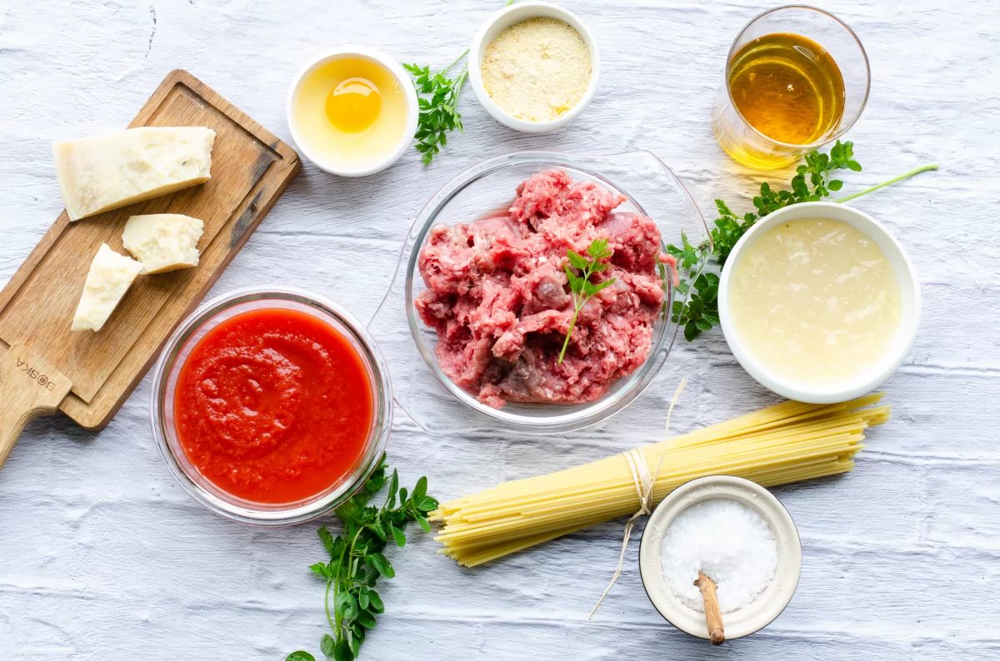

Ingredientes
Ingredientes para la albondiga
- 500 g de carne molida
- 1 huevo
- 1/2 taza de pan rallado
- 1 diente de ajo picado
- 1/4 de cebolla picada
- Sal y pimienta al gusto
- Aceite de oliva (para freír)
Ingredientes para la salsa de tomate
- 1 lata (400 g) de tomate triturado o puré de tomate
- 1 cucharada de aceite de oliva
- 1 diente de ajo picado
- 1/2 cebolla picada
- Sal y pimienta al gusto
- Hojas de albahaca o orégano (opcional)
Espagueti
- 250 g de espagueti
- Agua
- Sal
